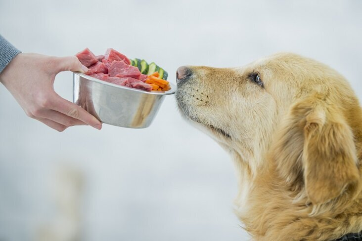
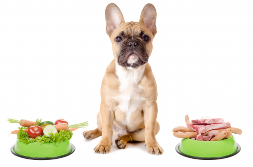

Sausās barības sastāvu ir bieži grūti izprast. Pat labākajām barībām var būt pievienotas lietas, kas suņu ēdienkartē nemaz neiederas, piemēram, vistas spalvas, knābji, pārstrādes atkritumi, mēsli. Maldīgi var būt sausās barības ar uzrakstiem “Bez konservantiem”, jo iepirktās izejvielās bieži var būt konservanti. Ar dabīgo suņu barību mēs atgriežamies pie normālās suņu barošanas un mēs zinām, ko suns ir ēdis. Jo svaigāki būs produkti, jo labāk suns jutīsies. Arī produktu dažādība ietekmēs suņa veselību.

Pieaugušus suņus ar normālu kustību slodzi ir ieteicams barot dienā ar barības daudzumu 2 – 4% no suņa ķermeņa svara (ĶS). Daudzums ir atkarīgs no suņa temperamenta, kustību daudzuma (aktivitātes),veselības, vecuma. Barības sastāvā jābūt 75 – 90% dzīvnieku izcelsmes produktiem (gaļa, kauli, piena produkti u.tt.) un 10- 25% augu izcelsmes produktiem (dārzeņi, augļi, graudaugi u.tt.).
| Svars | 2% no ķermeņa svara | Gaļa | Dārzeņi |
|---|---|---|---|
| 25 kg | 500 g | 375-450 g | 50-125 g |
| 30 kg | 600 g | 450-540 g | 60-150 g |
| 35 kg | 700 g | 525-630 g | 70-175 g |
| Svars | 3% no ķermeņa svara | Gaļa | Dārzeņi |
|---|---|---|---|
| 25 kg | 750 g | 563-675 g | 75-187 g |
| 30 kg | 900 g | 675-810 g | 90-225 g |
| 35 kg | 1050 g | 788-945 g | 105-262 g |
| Svars | 4% no ķermeņa svara | Gaļa | Dārzeņi |
|---|---|---|---|
| 25 kg | 1000 g | 750-900 g | 100-250 g |
| 30 kg | 1200 g | 900-1080 g | 120-350 g |
| 35 kg | 1400 g | 1050-1260 g | 140-350 g |

Jūsu suņa vārds:
Suņa svars(kg):
Suņa vecums(gadi):
Cik aktīvs ir jūsu suns?
.